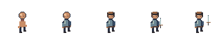
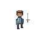
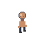
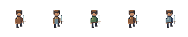

Search the Art Bible
Search works locally, including offline.
Art Bible · Characters
Equipment layers and vocation identity
Build paper-doll art around one action, facing, frame and timeline.
Edition 0.1.0 · Owner review pending for new reference art
On this page
A shared registration space
Start with body, outfit, hair and equipment layers in the same 64×64 coordinates. Cloak_back and equipment_back may sit below the body; outfit, hair, headwear and equipment_front may sit above. The exact back/front split changes with facing and action. A shield on the far side cannot remain above the face in every pose.
All visible components share action, facing, frame identity and duration. Select one timeline and update every visual layer from it. Independent AnimatedSprite2D playback per garment can drift and is not an acceptable synchronization contract. The art source determines which frame belongs to which action.

Registration, clipping and ordering
The correct study keeps the weapon aligned with the hand in every frame. The incorrect image shifts equipment five pixels right and four up: the grip floats away from the wrist even though its canvas is still 64×64. Reject it before palette polish.
For headwear, author a reviewed hair-hide variant or mask specific to the hat and facing. Do not let hair poke through solid crown pixels or erase an entire hairstyle when only the top is covered. A cloak needs rear and side overlap tests with weapons, arms and outfits. Face accessories must follow head movement, not remain fixed on the frame.


Source layer and runtime mapping
| Visual category | Suggested source layer | Review requirement |
|---|---|---|
| Base body | body | Shared pose and contact |
| Hair / face accessory | hair / face_accessory | Follow head; headwear compatibility |
| Clothing / armor | outfit / armor | Preserve wrists, legs and equipment clearance |
| Cloak | cloak_back / cloak_front | Facing-specific overlap |
| Headwear | headwear | Hair-hide contract, no clipping |
| Weapon / shield | equipment_back / equipment_front | Hand registration; action reach |
| Gathering tool | tool_back / tool_front | Correct work action and grip |
| Guide / collision reference | guides / collision_ref | Hidden and excluded from exports |
Five vocations, independent of combat
Vocation progression is separate from combat discipline. These are recommended clothing themes, not mandatory cosmetics or equipment rules. A Forgekeeper can use different combat gear; a Wayfinder does not automatically carry a permanent bow. Station tools may appear only during work actions.
| Vocation | Silhouette / materials | Suggested palette / accessories |
|---|---|---|
| Forgekeeper | Broad apron over compact work clothes; leather and dark metal | Earth, leather and limited warm fire accent; tongs or hammer for smithing |
| Hearthkeeper | Rolled sleeves, tied apron, warm cloth | Muted cloth and wood; cookware, pouch or food basket during work |
| Wayfinder | Clear traveling contour, short cloak or practical outer layer | Leaf/earth relationships; map case, rope or field tool |
| Woodwright | Tough vest or apron, free elbow movement | Wood/leather ramps; belt tools, saw or axe during appropriate action |
| Apothecary | Layered cloth with readable pouch shape | Cloth and restrained herb/magic accents; bottle case or mortar tools |

Godot presentation choices
For a simple flattened character, use AnimatedSprite2D with a reviewed SpriteFrames resource. For modular layers, use several Sprite2D children driven by a shared AnimationPlayer or one project-owned frame selector. Keep parent position, origin and animation time authoritative in one place. Godot does not automatically synchronize unrelated animation nodes.
Record source-to-runtime layer order per facing and action. Back/front equipment can use separate textures or visibility tracks. A frame mismatch must fail review rather than silently displaying an unrelated tool pose. This is a conceptual visual contract, not a claim that a game-specific paper-doll implementation exists.